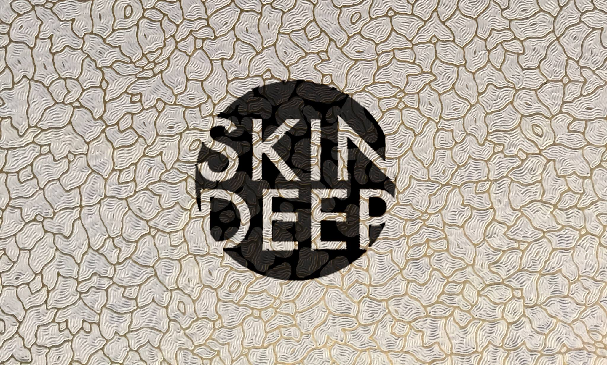

My name is Mili Malde and I am 21 years old. I am currently an undergraduate student reading Classics at Wadham College, Oxford. I am co-Director of Skin Deep Oxford , a magazine for the discussion of race issues, racial identity and cultural heritage, as well as the Women of Colour Officer for the Campaign for Racial Awareness and Equality (one of the Oxford University Student Union Liberation Campaigns). I am the captain of the Wadham and GTC Women's Football Team.
I am interested in writing about issues surrounding race and feminism, and I am undertaking work to decolonise the university and the spaces I inhabit.
